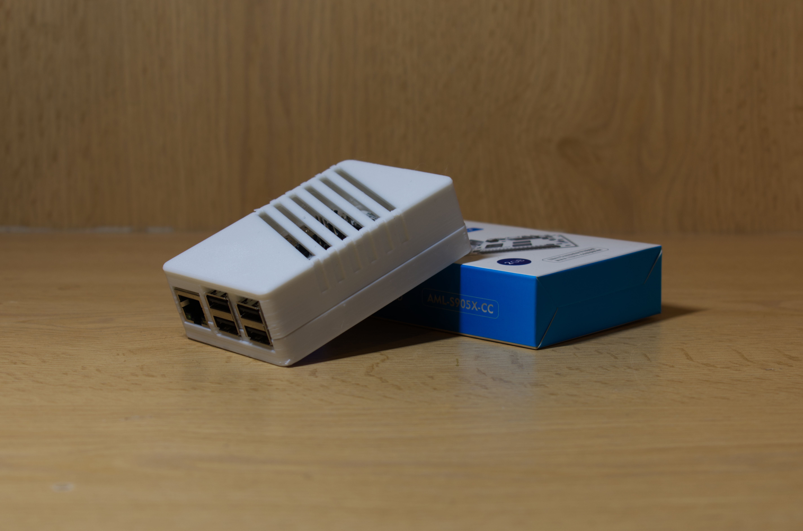

Unlocking the true potential via Octoprint
Octoprint, the most valuable modification any 3D printer enthuestist dreams of.
Idea stage
Octoprint, "The snappy web interface for your 3D printer", is the most powerful companion for 3D printing enthuestists. It's an open-source, web-based platform which revolutionises the user experiance by allowing individuals to remotely interact
with their printers. Long gone the days of worrying about micro SD cards! Developed by Gina Häußge. Octoprint empoweres users to manage the entire process remotely; from tweaking printer settings to processing a file to print to even printing
said file. There's truely is no limit to the possibilities Octoprint brings to the table. Addiotionally, it also allows for real-time video feedback via a camera, thus finally ending everyone's nightmare of a print failing whilst they
go outside and touch grass.
Enough with explaining what Octoprint is, why is it do I need it?
Well, as my first project, it is not only extremely (relatively) easy, it also is foriegn to a lot of people who don't spend majority
of their time tweaking around with their printer. Additionally, I really do need to set up a remote monitoring system for my printer due to numerous mid-print failures. These failures occur somehow happen to occur when I'm away from my
printer, preventing me from promptly stopping the print and avoiding further wastage of PLA.
Addiotional equipment

Due to the
simplicit nature that this should be, there isn't that much extra items that are needed. However, I do need a mini computer to be able to run Octoprint. Normally, I would've went with a Rasberry Pi 3B+ due to having integrated WiFi as
well as 1GB of RAM. However, due to supply issues, the Le Potato by Libre will suffice as it exceeds the physical requirements needed as well as being small factor enough to store on the side. Obviously a webcam is also needed, this issue
was promptly sorted when a £1.50 "generic" webcam was found in CEX. Lastly, a WiFi adapter is needed as Le Potato doesn't come with onboard WiFi. I managed to find a cheap, £5, usb module by tp-link which should be perfect for this aplication
The
overall approach shouldn't be that difficult, it should be a matter of just installing Octoprint on La Potato, configuring WiFi, configuring webcam and then, should be done. I hope I haven't jinxed myself!
Creation stage
First thing first is to print a case for Le Potato to prevent anything from touching it accidentally, so I went with printing this adorable case I found on Thingiverse.

After setting all the essentials up, the first real step is to install Linux onto the board. I've decided to go with Ubuntu as it is simply the easiest to set up, especially through SSH.
SSH essentailly allows for the user to interact with the device remoteltly (anything via command line). It turns out that getting SSH working in the first place is a bit of a nightmare for someone who let alone used it before, but haven't
used a server version of Linux. After running into a handful of issues, including acsessing Le Potato to just installing things turned out to be a bit of a hassle; however, it was nothing a good old reboot couldn't fix.
After
successfully being able to SSH into Le Potato, it was time to install Octoprint. However, to do that, we need to be able to install git. Git is one of the 3 things keeping programmers sane and alive, alongside Stack Overflow and the newest
rendition, ChatGPT. It is a "distributed version control system that tracks changes in any set of computer files". What this allows is for programmers to share code and programs with each other without the need for something like Google
Drive or Dropbox, both of which has a paywall of some sorts.
The final step is to install Octoprint and set it up. After downloading running the following command line, a user-friendly GUI is presented in the form of a CLI. From
which, the base install of Octoprint can happen. After proceeding and going through the menu and downloading the software, enabling a camera was super easy.
After setting up Le Potato's side of the story, it's time to setup the
UI as well. To do this, we need to accses the URL http://aml-s905x-cc/{INSTANCE_NAME}/. After that, we are greeted with a setup wizzard which asks for information such as: login details (since I kind of messed up the install, I set them
here), connectivity information and other miscellaneous information. Finally, the main menu pops up and I am able to use Octoprint however I please. 
Completion
TBD
Final thoughts
TBD